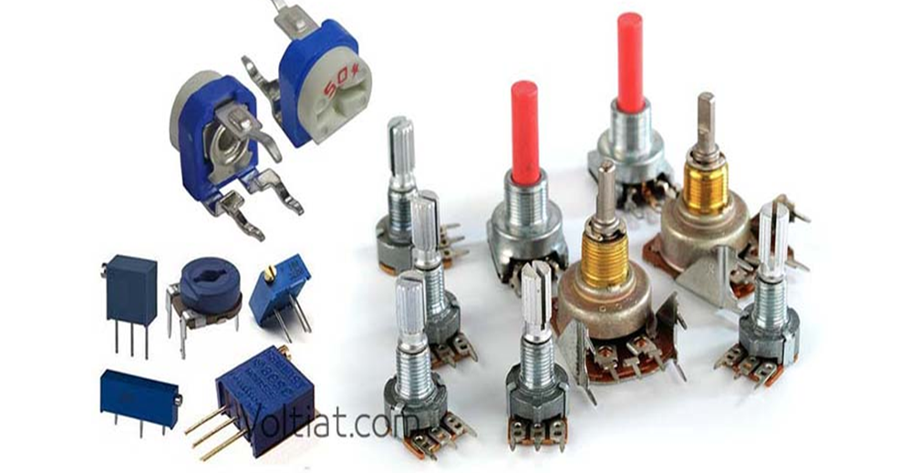
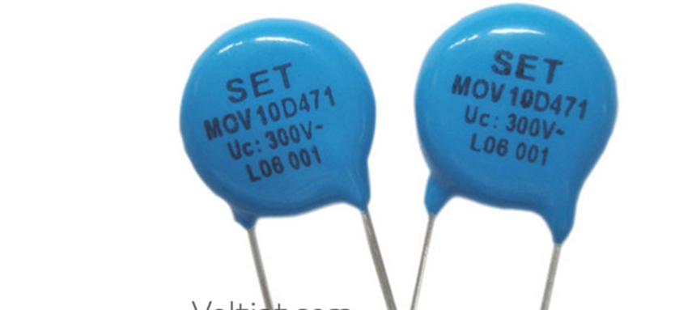

المقاومة المتغيرة
تعتبر المقاومة المقاومة المتغيرة أو "الريوستات" أداة لتغيير المقاومة الكهربية في الدائرة وتتكون الريوستات في الأغلب من مقاومة على شكل اسطوانة وتحتوي على طرفين للتوصيل احدهما ثابت والأخر متحرك على منزلق يلامس حلقات سلك الملف، بتحريك المنزلق باتجاه الوصلة الثابتة أو بالابتعاد عنها فإن المقاومة تتغير إما بالنقصان أو الزيادة. وبهذه الحالة يمكن التحكم بقيمة التيار الكهربي المار في الدائرة وتستخدم الريوستات في التحكم في سرعة الموتور الكهربي وفي التحكم في الإنارة المنزلية وغيرها من التطبيقات .
أنواع المقاومات المتغيرة
• المقاومات الدورانية (Rotational resistance).
• المقاومات الانزلاقية (Sliding resistances).
• المقاومات الضوئية (Light-dependent Resistors (LDR)).
• المقاومات الحرارية (Thermal resistors).
المقاومات الدورانية
تعد من أشهر أنواع المقاومات المتغيرة استخداماً، حيث تعمل على التحكم بقيمة مقاومتها من خلال تحريك محور الإدارة بشكل يدوي.
خواصها:
• رخيصة الثمن.
• تتوفر بأشكال وأحجام مختلفة.
• سهلة الاستخدام.
• عيبها هي أنها غير دقيقة في اختيار القيمة المطلوبة.
• تتوفر منها مقاومات دقيقة ولكنها غالية الثمن وتصنع بنطاقات محدودة.

المقاومات الانزلاقية
تعد من أحد أنواع المقاومات المتغيرة، حيث تتشابه في بعض الوظائف مع المقاومة الدورانية، ولكن الفرق هو أن المقاومة الانزلاقية لديها ذراع يتم إزاحتها حتى نصل إلى القيمة المطلوبة.
المقاومات الضوئية
خواصها:
• تعد من أحد أنواع المقاومات المتغيرة والتي تعمل على التحكم في قيمة المقاومة من خلال تسليط الضوء عليها.
• تسمى أيضاً بالــ LDR وهو اختصاراً لـ Light Dependent Resistor.
• تتغير قيمة مقاومتها حسب كمية الضوء الساقط على الضوئية.
• كلما زادت قيمة المقاومة الضوئية قل قيمة التيار المار والعكس صحيح.
المقاومة الحرارية
تعد من أحد أنواع المقاومات المتغيرة والتي تعتمد في مبدأ عملها على درجة الحرارة المحيطة بها، أي تزيد قيمة المقاومة بزيادة درجة حرارة الوسط المحيط وتقل بانخفاض الحرارة ومن أنواعها:
• المعامل الحراري السالب NTC:
وهي اختصاراً لـ Negative Temperature Coefficient. وتكون العلاقة عكسية بين درجة الحرارة والمقاومة، أي كلما زادت درجة الحرارة قلت قيمة المقاومة، والعكس صحيح.
• المعامل الحراري الموجب PTC:
هي اختصاراً لـ Positive Temperature Coefficient. وتكون العلاقة طردية بين درجة الحرارة والمقاومة، أي كلما زادت درجة الحرارة زادت قيمة المقاومة، والعكس صحيح.
مقاومة الجهد (فاريستور)
خواصها:
• تصنف من إحدى المقاومات المتغيرة الهامة والتي تستخدم في حماية الدوائر الإلكترونية من ارتفاع قيمة الجهد عن الحد المصمم عليها.
• لها مسميات أخرى مثل الـ MOV أو VDR.
• مبدأ عملها: يتم تصنيعها على قيم جهود مقننة، وبالتالي إذا زادت قيمة الجهد عن الحد المسموح به، فإن ذلك يؤدي إلى تقليل قيمة المقاومة إلى أن تصبح دائرة قصر فتفصل مصدر التغذية عن باقي الدائرة الكهربائية سواء كان حمل كهربائي أو لوحة الكترونية، فإن قيمة المقاومة سوف تقل إذا تجاوز الجهد المطبق عليها قيمة معينة.
